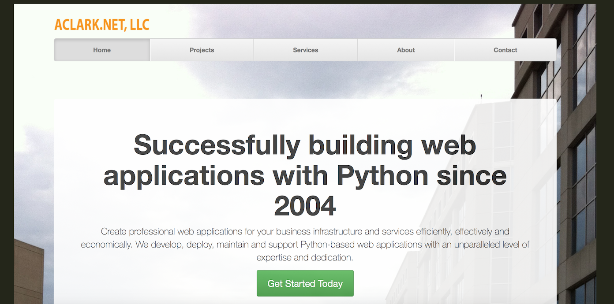

One year later
Last year I wrote about developing our company website with Django:
This year, I updated the site and am again very happy with the results. Here’s an overview of the interesting aspects.
I’ve continued to develop Python projects using a Makefile. So much so I’m now attempting to genericize the approach here:
Last year around this time I didn’t fully understand what I was doing with startproject and startapp (as evidenced by this insanely nested package structure). Now I understand a little bit more, so I settled on a project called aclarknet and an app called website.
I haven’t written about it yet, but I spent a lot of time in December developing a time tracking and invoicing application (more on that later). As such, I couldn’t tolerate storing identical data in multiple locations. So exposed the data I needed via Django Rest Framework then consumed it with requests.
Enjoy the site and code and hire my business in 2016!